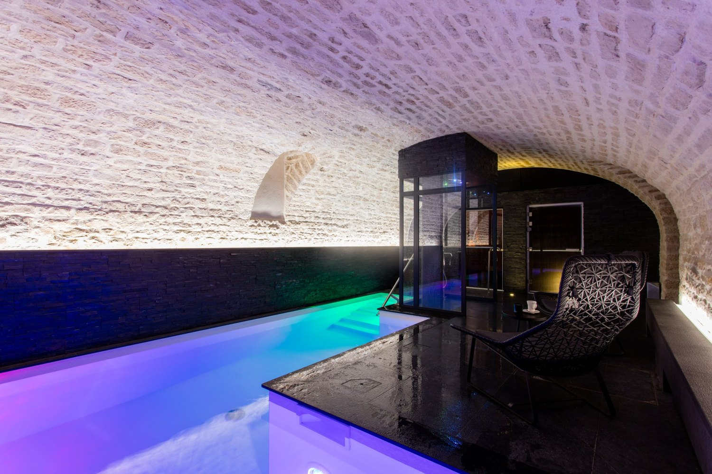
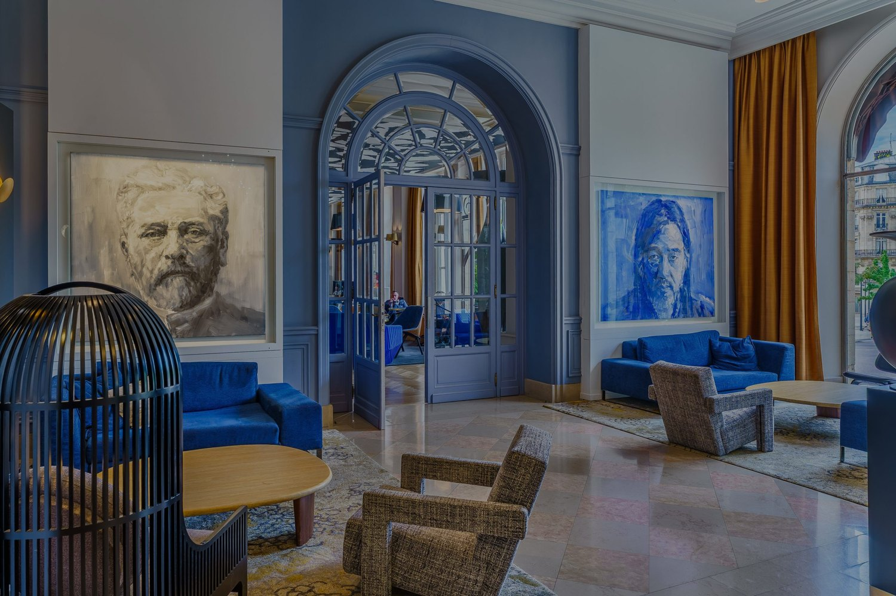
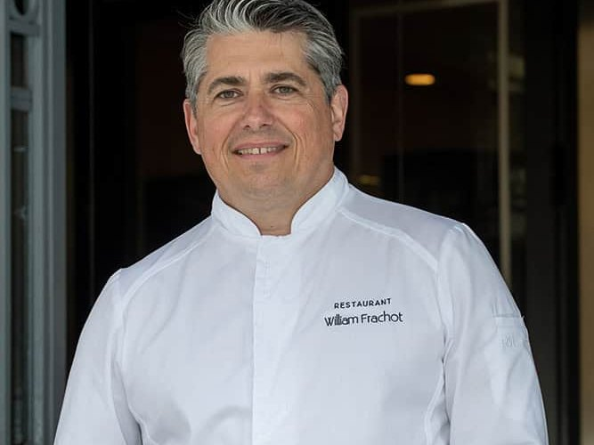
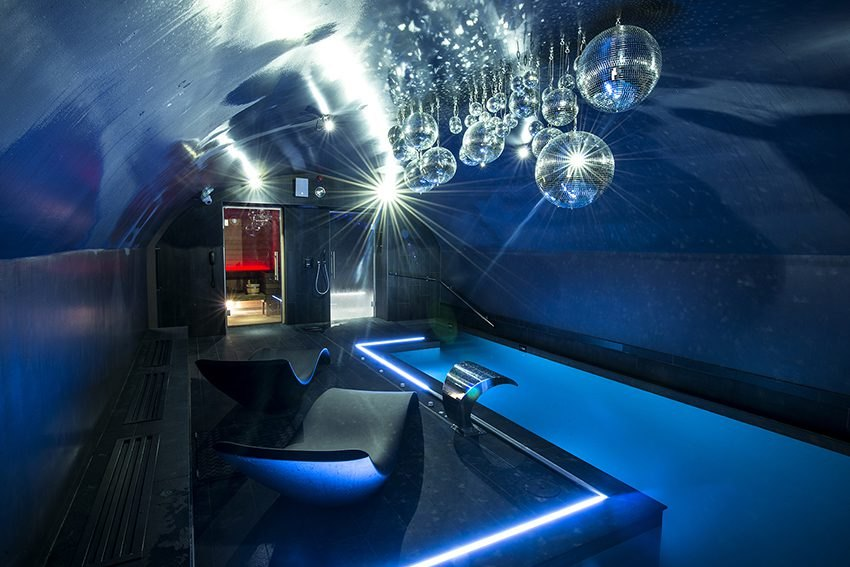
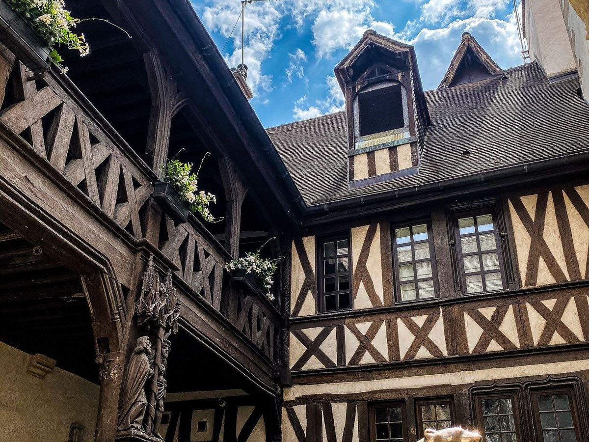

Meilleurs hôtels à Dijon : 8 adresses classées en 2026
Un seul 5 étoiles pour toute la ville, six tables étoilées dont une seule dans un hôtel, et
deux caves médiévales transformées en bassins de nage.
Par Emmanuel Laveran, rédacteur hôtels et gastronomie✺Publié le 31 août 2026✺14 min de lecture

Le bassin de nage du Grand Hôtel La Cloche, installé sous les voûtes de pierre
de la maison. Photo : site officiel de l'établissement.
L'essentielTrois adresses, trois logiques de séjour
Grand Hôtel La Cloche, 9,2/10 : le seul 5 étoiles de Dijon,
classé monument historique place Darcy, 88 chambres et un spa sous voûtes de pierre.
Le Chapeau Rouge, 9,0/10 : 28 chambres seulement, et
la seule table deux étoiles de la ville, celle de William Frachot.
Vertigo Hôtel, 8,8/10 : membre de Design Hotels, spa NUXE avec piscine
intérieure dans les caves d'un immeuble de 1926 inscrit aux monuments historiques.
Dijon a une hôtellerie de ville de province qui a longtemps vécu sur son emplacement plutôt
que sur ses maisons. Cela a changé, mais moins vite que sa gastronomie : la ville aligne
six tables étoilées au Guide MICHELIN en 2026 et un seul hôtel 5
étoiles. Nous classons huit adresses par le Score LMHS sur 10 et par
l'Indice Bourgogne sur 5, notre indice thématique pour cette page.
Notre sélection : les 8 meilleurs hôtels de Dijon
01

Grand Hôtel La Cloche, le seul 5 étoiles de la ville 9,2/10
C'est le seul établissement 5 étoiles de Dijon, et la maison le dit
elle-même. Le bâtiment, classé monument historique, ouvre sur la place
Darcy par une façade néoclassique qui pose d'emblée le registre. Les 88 chambres,
dont cinq suites et appartements, mêlent boiseries d'époque et mobilier
contemporain sans tomber ni dans la reconstitution ni dans la rénovation aseptisée. La
vraie singularité est en sous-sol : Le Spa by La Cloche occupe les anciennes
voûtes de pierre, avec sauna, hammam, douche multisensorielle, soins Biologique
Recherche et Vinésime, et un bassin de nage à contre-courant. Une
précision qui compte : ce n'est pas une piscine de longueur, et
l'accès au spa se fait uniquement sur réservation. S'ajoutent une salle
de fitness, le restaurant Les Jardins by La Cloche, un bar et une boutique de vins. Le
bémol : les tarifs de haute saison décrochent nettement du reste du classement. Pour les
séjours d'affaires haut de gamme et les week-ends où le lieu compte autant que la ville.
88 chambres dont 5 suites · Monument historique · Spa sous voûtes, sur réservation · Bassin à contre-courant ·
Site officiel →
02

Le Chapeau Rouge, la seule table deux étoiles de Dijon 9,0/10
Voilà l'adresse où la table tire toute la maison vers le haut. William
Frachot a décroché sa première étoile en 2003, la seconde en 2013,
et les conserve dans la sélection 2026 : sur les six tables étoilées de Dijon, la
sienne est la seule à deux étoiles, et la seule installée dans un hôtel. Le
restaurant est entré aux Grandes Tables du Monde en 2018. L'hôtel compte
28 chambres et suites dans un esprit contemporain, ce qui donne un service
personnalisé que les grandes enseignes ne peuvent pas offrir, avec voiturier, bagagiste et
conciergerie. Ce que le brief de départ ignorait et que la maison publie : elle dispose
aussi d'un espace bien-être avec sauna, hammam et spa. Le bémol : le
gastronomique n'ouvre que du mercredi au samedi, midi et soir, et
vingt-huit clés se remplissent vite. Il faut caler ses dates sur la table, pas l'inverse.
28 chambres et suites · 2 étoiles MICHELIN depuis 2013 · Grandes Tables du Monde · Sauna, hammam et spa ·
Site officiel →
03

Vertigo Hôtel, le spa que Dijon n'avait pas 8,8/10
L'établissement occupe un immeuble de 1926-1927 inscrit au titre des monuments
historiques, repris par le bureau d'étude dijonnais Carminati et par l'architecte
d'intérieur Ludivine De Brito. Membre de Design Hotels,
il assume un parti pris franc : 42 chambres et suites qui mêlent
haussmannien et avant-garde, avec lit suspendu signature et téléviseur miroir. Le vrai
motif de sa troisième place est ailleurs : le spa NUXE occupe les voûtes
et réunit une piscine intérieure, un sauna, un hammam,
trois cabines de soin dont une cabine duo et une salle de fitness
Technogym. C'est l'offre bien-être la plus complète du classement. L'Embassy Bar, nom d'un
bar dijonnais que la maison a fait renaître, s'anime le week-end avec un DJ résident. Le
bémol : ce parti pris décoratif ne se discute pas, il se choisit, et le petit-déjeuner
buffet à 20 € s'ajoute au tarif de la chambre.
42 chambres et suites · Spa NUXE sous voûtes · Piscine intérieure, sauna, hammam, 3 cabines · Immeuble 1926 inscrit MH ·
Site officiel →
04

Maison Philippe Le Bon, une cour gothique en plein centre 8,6/10
18 rue Sainte-Anne et 19 rue Berbisey, 21000 Dijon · 4 étoiles · Indice Bourgogne 4,3/5
La maison n'est pas un bâtiment mais trois demeures historiques, dont
un ancien couvent, réunies autour d'une cour gothique du XVe siècle
classée aux monuments historiques. C'est l'atout que rien ne remplace dans ce
classement : un refuge à ciel ouvert en plein centre, où l'on prend le petit-déjeuner sans
entendre la rue. Les 40 chambres et suites se répartissent entre les corps
anciens, qui gardent des plafonds à la française de quatre mètres, leurs
poutres apparentes et des cheminées en pierre de Bourgogne, et un bâtiment contemporain
plus sobre. Le restaurant La Closerie et le bar Le 19
complètent la maison. Le bémol, et il est décisif ici : l'expérience dépend
entièrement du bâtiment où l'on est logé. À réservation, demander explicitement
une chambre dans la partie ancienne. Pas de spa.
40 chambres et suites · Cour gothique XVe classée · Plafonds à la française · Restaurant La Closerie, bar Le 19 ·
Site officiel →
05
Mama Shelter Dijon, l'urbain assumé face à la cathédrale 8,2/10
Ouvert à l'été 2023, le Mama Shelter est la plus jeune adresse du classement et la plus
grande : 120 chambres, face à la cathédrale Saint-Bénigne
et à quelques pas de la place Darcy. La marque applique sa recette, décor spectaculaire et
ambiance revendiquée, avec ici des clins d'œil au vignoble jusque dans la décoration. La
maison ajoute un restaurant en rez-de-chaussée, un patio végétalisé, une véranda, une
vinothèque, des salles de karaoké et le CineMama pour des projections privées. Sa taille
est un argument réel : c'est l'adresse du centre où l'on trouve encore de la place quand
les petites maisons affichent complet. Le bémol : l'ancrage bourguignon reste décoratif, ce
que traduit l'Indice Bourgogne le plus bas des 4 étoiles de ce palmarès, et l'animation des
espaces communs se ressent dans les chambres proches. Pour les séjours urbains et les
groupes.
120 chambres · Ouvert en 2023 · Face à la cathédrale Saint-Bénigne · Restaurant, patio, vinothèque, CineMama ·
Site officiel →
06
Hôtel Wilson, un relais de poste du XVIIe siècle 7,8/10
1 rue de Longvic, place Wilson, 21000 Dijon · 3 étoiles · Teritoria · Indice Bourgogne 3,8/5
Voici l'adresse qui ne cherche pas à en faire trop, et c'est précisément son intérêt.
Le bâtiment est un ancien relais de poste du XVIIe siècle, à
colombages, dans une architecture typiquement bourguignonne : sur le seul
critère du bâti, l'Indice Bourgogne dépasse celui du Mama Shelter, qui est pourtant classé
au-dessus. 27 chambres, membre du réseau Teritoria, avec
les certifications Clorofil et Peace & Work Gold, ce qui n'est pas courant à ce niveau
de gamme. Le bémol : pas de restaurant, seulement un service en chambre et
le petit-déjeuner, et vingt-sept clés qui partent vite en saison. La place Wilson est un peu
en retrait du cœur historique, dix minutes à pied. Pour les voyageurs seuls et les couples
qui préfèrent une maison à une enseigne.
27 chambres · Relais de poste du XVIIe à colombages · Réseau Teritoria · Certifié Clorofil et Peace & Work Gold ·
Site officiel →
07
Hôtel Le Jacquemart, une maison de 1740 rénovée en 2024 7,5/10
L'adresse tient d'abord à sa position, rue Verrerie, à deux pas du Palais des Ducs et de
l'église Notre-Dame dont le Jacquemart lui donne son nom. Le bâtiment date de
1740 et, point qui change tout par rapport à ce qu'on lit encore sur cette
maison, il a été entièrement rénové en 2024. Les
25 chambres climatisées, vingt-trois dans le bâtiment principal et deux en
annexe, se répartissent aujourd'hui entre catégories standard et premium, toutes avec
décoration personnalisée. Le petit-déjeuner à la française est servi de 7 h à 10 h, et la
réception est ouverte vingt-quatre heures sur vingt-quatre. Le bémol : pas de
parking en propre, un parking public sécurisé à 280 mètres avec tarif négocié, et
une répartition entre deux bâtiments dont il faut avoir conscience à la réservation. Pour
qui veut tout faire à pied depuis sa chambre.
25 chambres climatisées · Bâtiment de 1740 · Entièrement rénové en 2024 · À deux pas du Palais des Ducs ·
Site officiel →
08
ibis Styles Dijon Central, une façade de 1928 place Grangier 7,2/10
La surprise du classement, et elle tient à un détail que l'enseigne ne met pas en avant :
la façade historique date de 1928 et a été rénovée à
l'identique. Les chambres suivent un registre Art déco plus
travaillé que ce que la gamme laisse attendre, et certaines disposent d'un
balcon ou d'une terrasse, ce qui est rare en hypercentre. La maison
exploite deux tables, le restaurant Le Central et Le Petit Central, ce
dernier avec une terrasse chauffée. La position, place Grangier, est l'une des meilleures
du palmarès. Le bémol : l'expérience reste celle d'une enseigne, et l'Indice Bourgogne le
plus bas du classement le dit sans détour. La maison ne publie pas son nombre de chambres.
Pour les séjours courts et les familles qui veulent la centralité sans le tarif du centre.
Façade de 1928 rénovée à l'identique · Chambres Art déco · Balcons et terrasses · Deux restaurants ·
Site officiel →
Tableau comparatif : hôtels de Dijon 2026
Hôtel
Étoiles
Score LMHS
Indice Bourgogne
Chambres
Table étoilée
Spa
Bassin
Pour qui
Grand Hôtel La Cloche
5
9,2/10
4,7/5
88
Non
Sous voûtes
À contre-courant
Luxe, affaires
Le Chapeau Rouge
4
9,0/10
4,6/5
28
William Frachot, 2 étoiles
Oui
Non
Gastronomie
Vertigo Hôtel
4
8,8/10
4,4/5
42
Non
NUXE, 3 cabines
Piscine intérieure
Design, bien-être
Maison Philippe Le Bon
4
8,6/10
4,3/5
40
Non
Non
Non
Patrimoine, couples
Mama Shelter Dijon
4
8,2/10
3,9/5
120
Non
Non
Non
Urbain, groupes
Hôtel Wilson
3
7,8/10
3,8/5
27
Non
Non
Non
Charme discret
Hôtel Le Jacquemart
3
7,5/10
3,6/5
25
Non
Non
Non
Emplacement
ibis Styles Dijon Central
3
7,2/10
3,4/5
n. c.
Non
Non
Non
Praticité, familles
Classement par Score LMHS. Score moyen des huit adresses : 8,3/10. Indice
Bourgogne moyen : 4,1/5. Informations relevées le 31 août 2026 sur les sites officiels des
établissements, auprès du Guide MICHELIN et du conseil départemental de la Côte-d'Or. L'ibis
Styles Dijon Central ne publie pas son nombre de chambres, d'où la mention « n. c. » plutôt
qu'un chiffre inventé.
Protocole LMHS : comment nous avons classé ces hôtels
L'Indice Bourgogne, noté sur 5, est un indice thématique propre à cette
page. Il mesure l'enracinement local et rien d'autre : ancrage dans le bâti
bourguignon, rapport au vignoble et aux produits régionaux,
table, savoir-faire mobilisés et échelle de la
maison. C'est ce qui explique qu'un 3 étoiles installé dans un relais de poste à
colombages devance un 4 étoiles récent sur ce seul critère. Le Score LMHS sur 10
évalue la globalité, réserves comprises, et relève de la
grille LMHS Destination.
Ce palmarès est documentaire. Nous n'avons pas effectué de séjour de
contrôle. Catégories, capacités, tables, distinctions et équipements ont été relevés le 31 août
2026 sur les sites officiels des établissements et auprès du Guide MICHELIN. Aucun partenariat
commercial, aucune affiliation.
Aucun tarif n'est publié dans ce classement, et c'est délibéré. Les
montants dont nous disposions ne figuraient sur aucun site officiel au moment du relevé, et un
prix d'appel se périme en une saison. Les huit fiches renvoient au site de chaque maison, où
les tarifs du jour sont exacts par construction.
Dijon : ce qu'il faut savoir avant de réserver
Six tables étoilées, une seule à l'hôtel. C'est le fait le plus utile de
cette page. Dijon compte six étoiles au Guide MICHELIN en 2026, dont la
seule table deux étoiles est celle de William Frachot, au Chapeau Rouge. Les
autres sont des restaurants indépendants. Autrement dit : sauf à cette adresse, il faudra
sortir dîner, ce qui n'a rien de pénible dans une ville dont le centre se traverse à pied en
vingt minutes.
Un seul 5 étoiles, et il est seul depuis longtemps. Le Grand Hôtel La
Cloche n'a pas de concurrent dans sa catégorie. C'est un fait de marché autant qu'un fait
d'hôtellerie : la ville a une offre 4 étoiles dense et disputée, et rien au-dessus. Qui
cherche un second palace à Dijon devra attendre.
Le centre se fait à pied, la voiture est une contrainte. Les huit adresses
de ce classement sont dans le secteur sauvegardé ou à sa lisière immédiate. Aucune ne dispose
d'un parking en propre digne de ce nom, et l'hypercentre est largement piétonnier. Le train est
la bonne option : la gare Dijon-Ville est à dix minutes à pied de la place Darcy.
Dijon est une base, pas seulement une étape. La Route des Grands Crus
commence aux portes sud de la ville, à Marsannay-la-Côte, et file vers Nuits-Saint-Georges,
Beaune et Pommard. Les Climats du vignoble de Bourgogne sont inscrits au patrimoine mondial de
l'UNESCO depuis 2015. Pour dormir au milieu des vignes plutôt qu'en ville, voir notre avis sur
le Château la Commaraine, à Pommard.
Questions fréquentes sur les hôtels de Dijon
Quel est le meilleur hôtel de Dijon ?
Selon nos relevés 2026, le Grand Hôtel La Cloche obtient la meilleure
note, 9,2/10 : c'est le seul 5 étoiles de la ville,
classé monument historique place Darcy, avec 88 chambres et un spa installé dans les
anciennes voûtes de pierre. Pour un séjour où la table prime, le Chapeau Rouge et ses deux
étoiles MICHELIN lui sont préférables.
Combien de restaurants étoilés à Dijon ?
Six en 2026. Un seul est à deux étoiles, le restaurant
William Frachot, installé dans l'hôtel Le Chapeau Rouge, rue Michelet.
Le chef a obtenu sa première étoile en 2003 et la seconde en 2013. Les cinq autres tables
distinguées sont des restaurants indépendants, sans hébergement.
Quel hôtel de Dijon a le meilleur spa ?
Le Vertigo Hôtel, sans hésitation. Son spa NUXE occupe les voûtes de
l'immeuble et réunit une piscine intérieure, un sauna, un hammam, trois cabines de
soin dont une cabine duo et une salle de fitness. Le Grand Hôtel La Cloche
possède également un spa sous voûtes, avec sauna, hammam et bassin de nage à
contre-courant, mais l'accès s'y fait uniquement sur réservation. Le
Chapeau Rouge dispose d'un espace bien-être avec sauna et hammam.
Y a-t-il un hôtel avec piscine à Dijon ?
Une seule véritable piscine intérieure dans ce classement, celle du spa NUXE du
Vertigo Hôtel. Le Grand Hôtel La Cloche propose un
bassin de nage à contre-courant, ce qui n'est pas la même chose : on y
nage sur place, pas en longueurs. Les six autres adresses n'ont ni piscine ni bassin.
Dans quel quartier dormir à Dijon ?
Dans le secteur sauvegardé, sans hésiter, car tout s'y fait à pied. La
place Darcy et ses abords concentrent La Cloche et le Mama Shelter ; la rue Michelet et la
rue Sainte-Anne, le Chapeau Rouge et la Maison Philippe Le Bon ; la rue Verrerie et la
place Grangier, Le Jacquemart et l'ibis Styles, tous deux à deux pas du Palais des Ducs.
La place Wilson, où se trouve l'Hôtel Wilson, est légèrement en retrait, à une dizaine de
minutes de marche.
Peut-on visiter le vignoble bourguignon depuis Dijon ?
Oui, et c'est l'un des meilleurs arguments de la ville. La Route des Grands
Crus démarre à Marsannay-la-Côte, aux portes sud de Dijon, puis traverse
Gevrey-Chambertin, Nuits-Saint-Georges, Beaune et Pommard. Les
Climats du vignoble de Bourgogne sont inscrits au patrimoine mondial de
l'UNESCO depuis 2015. Comptez une trentaine de minutes de voiture pour Nuits-Saint-Georges,
environ quarante-cinq pour Beaune.
Le mot d'EmmanuelUne ville qui mange mieux qu'elle ne dort
Ce qui frappe en établissant ce classement, c'est l'écart entre la table et la chambre. Dijon aligne six étoiles au Guide MICHELIN et un seul hôtel 5 étoiles. Une ville de cette taille, capitale d'une région viticole classée à l'UNESCO, porte d'entrée de la Route des Grands Crus, et une seule maison au sommet : c'est peu. La bonne nouvelle est ailleurs, dans ce que les 4 étoiles font de leur bâti. Deux caves médiévales transformées en espaces de nage, une cour gothique du XVe qu'on traverse en peignoir, un relais de poste à colombages : voilà ce que Dijon offre et que ni Lyon ni Bordeaux ne peuvent proposer sous cette forme. La ville ne gagnera pas la course au palace. Elle n'en a peut-être pas besoin.
Emmanuel Laveran, rédacteur hôtels et gastronomie
Méthode et sources
8 hôtels de Dijon classés par le Score LMHS sur 10, issu de la grille
LMHS Destination, et par l'Indice Bourgogne sur 5, indice thématique propre
à cette page : ancrage dans le bâti bourguignon, rapport au vignoble et aux produits
régionaux, table, savoir-faire mobilisés, échelle de la maison. Score moyen des huit
adresses : 8,3/10. Indice Bourgogne moyen : 4,1/5. Aucun séjour de contrôle n'a été
effectué. Catégories, capacités, tables, distinctions et équipements relevés le
31 août 2026 sur les sites officiels des huit établissements et auprès du Guide MICHELIN.
Aucun tarif n'est publié, faute d'avoir pu en relever à la source. Aucun
partenariat commercial, aucune affiliation. Photographies : Grand Hôtel La Cloche, Chapeau
Rouge, Vertigo Hôtel et Maison Philippe Le Bon, sites officiels.
8 adressesIndice Bourgogne /5Sans séjour de contrôle0 partenariat